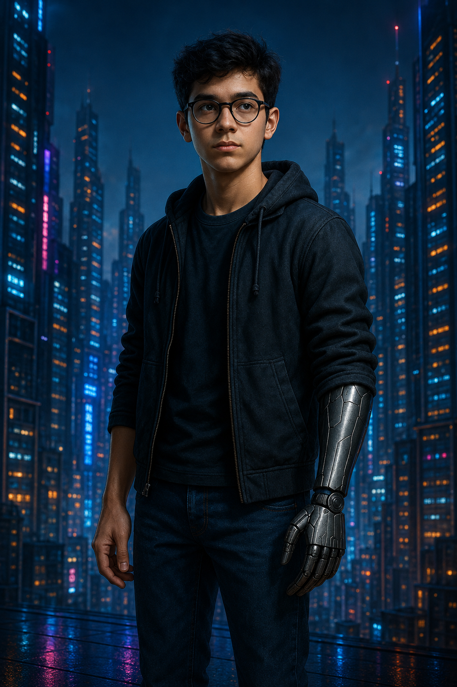

Daniel Killian
Daniel Killian é o jovem que morreu… e voltou. Após um acidente no Lago da Carpideira, seu corpo permaneceu sem sinais vitais por mais de uma hora. Contra toda a lógica médica, ele desperta, sem explicação, sem memórias claras do ocorrido, mas com algo diferente pulsando dentro de si.
Aos poucos, Daniel descobre que carrega no cérebro um implante neural avançado — um segredo que nem ele mesmo sabia possuir. A revelação desperta suspeitas sobre as verdadeiras razões de seu retorno à vida.
Calado, observador e intensamente ligado aos mistérios que o cercam, Daniel carrega a força silenciosa de quem sobreviveu ao impossível — e que agora precisa entender o propósito de sua segunda chance. À medida que experiências inexplicáveis começam a emergir — sonhos vívidos, visões proféticas e conexões com outras pessoas —, ele se vê no centro de um embate entre fé e tecnologia, ciência e mistério. Seria ele um milagre? Um experimento? Ou ambos ao mesmo tempo?